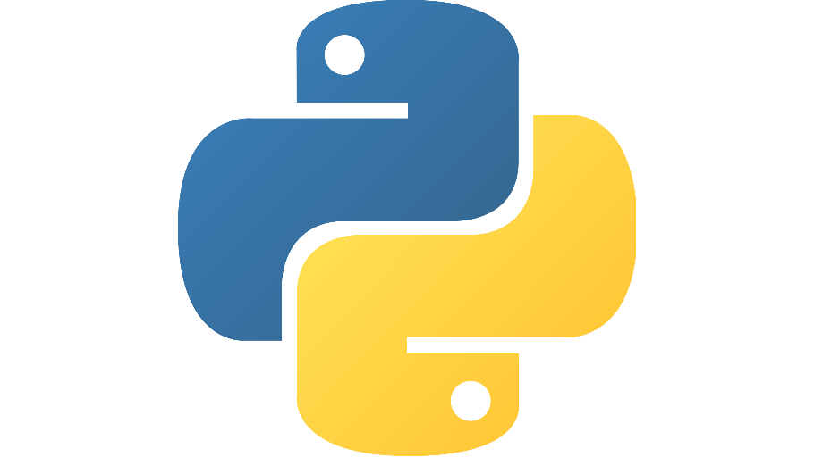
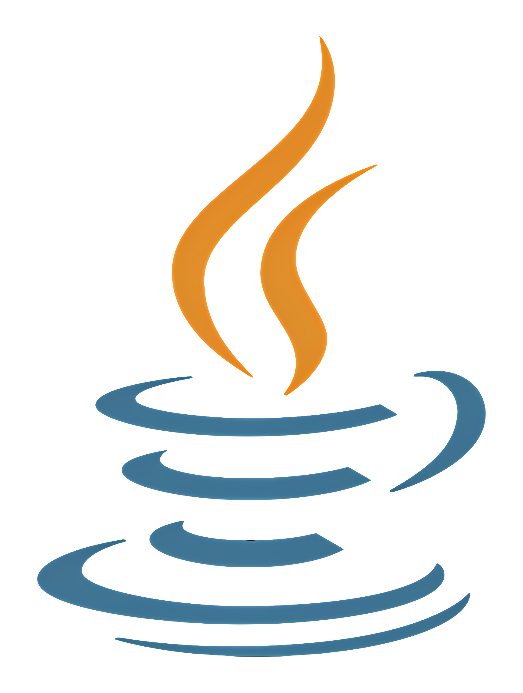
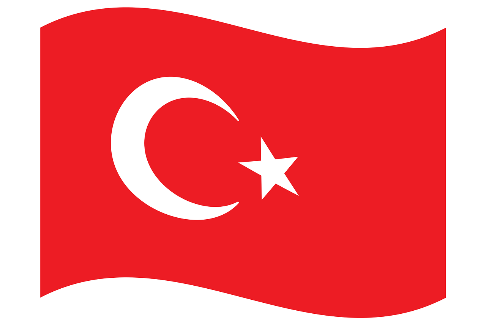
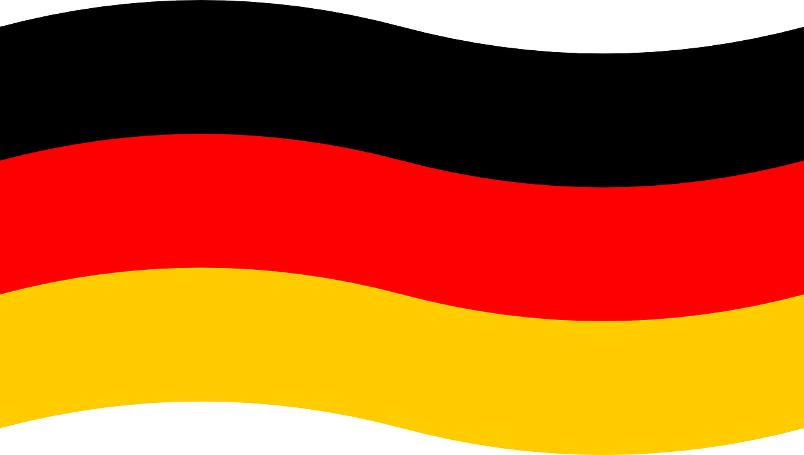

Resume
Education
- Ankara Yıldırım Beyazıt University – B.Sc. in Computer Engineering
(2021–Present)
GPA: 3.4/4.0 - Açı College Science High School – 2017–2021
GPA: 95.28
Experience
- Executive Board Member – Science and Technology Club, AYBU (Sep 2022 – Jun
2023)
During the 2022-2023 term, I served as a member of the Executive Board of the Science and Technology Club. In this role, I was responsible for organizing events, coordinating team activities, and contributing to decision-making processes. Additionally, I played an active role in developing and coding the club’s website by providing technical support. This experience greatly enhanced my skills in teamwork and project management.
-
Course – Ministry of Industry & Technology, Autonomous Driving Fundamentals
(Nov 2024 – Dec 2024)
As part of this course, I gained fundamental competencies in areas such as vehicle modeling, advanced driver assistance systems, sensor fusion, and state estimation. I developed technical skills in deep learning-based environment perception, motion planning, and control in autonomous vehicles. I also acquired knowledge in automotive systems engineering and functional safety.
-
Program – Autonomous Driving Advanced Program (Ongoing) (Dec 2024 – Jun
2025)
In this advanced training program, I am focusing on vehicle modeling, advanced driver assistance systems, sensor fusion, state estimation, deep learning, environment perception, and advanced motion planning and control in autonomous vehicles. The intensive program is expected to be completed by June 2025.
Skills

Python (NumPy, SciPy) – Data analysis, numerical computing
Java – OOP principles and application development C/C++ – System-level programming
C/C++ – System-level programming- AI & ML – Deep learning, classification, neural networks
- Web – HTML, CSS, JS, PHP, MySQL
 Tools – Git, Android Studio, VS Code
Tools – Git, Android Studio, VS Code
Languages

Turkish – Native- English – Advanced

German – Intermediate